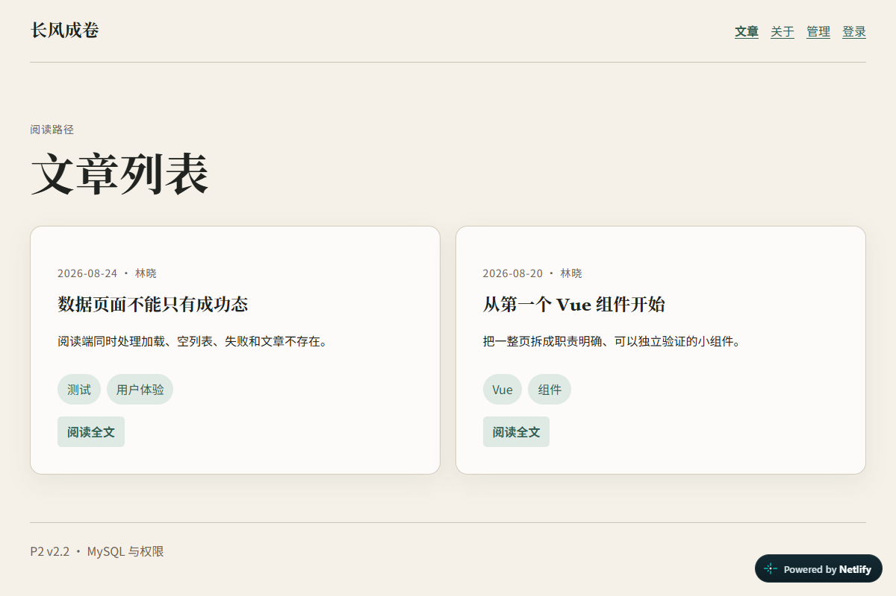
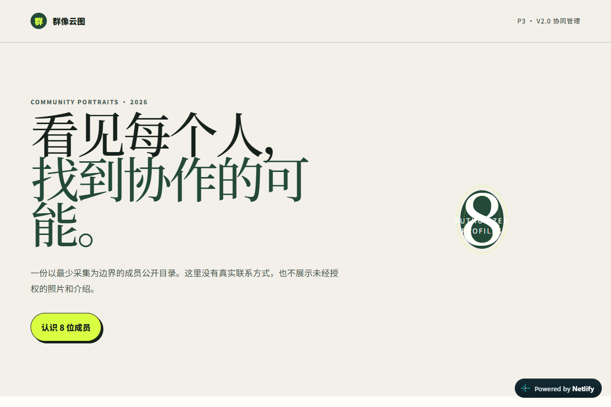

人工智能技术专业学生 · 大模型开发学习者
广东科学技术职业学院 · 25大模型应用产业学院班
HTML5、CSS3、JavaScript，正在学习 Git、数据库与网站部署。
在校学习
珠海
18707149721
广东省珠海市金湾区广东科学技术职业学院
泰迪杯数据挖掘 国家二等奖
全国大学生数学建模竞赛
制作自己的网页，展示资料与作品，记录修改、测试与发布过程。

文章展示、接口与数据库。

内容发布与社区互动。